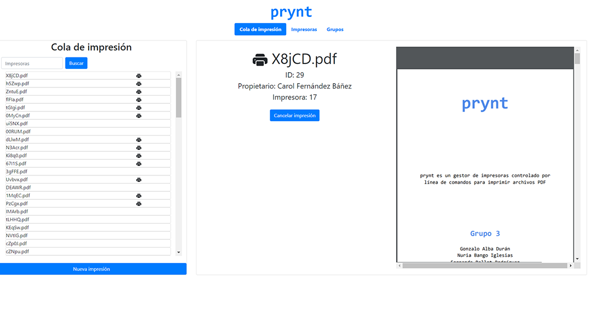
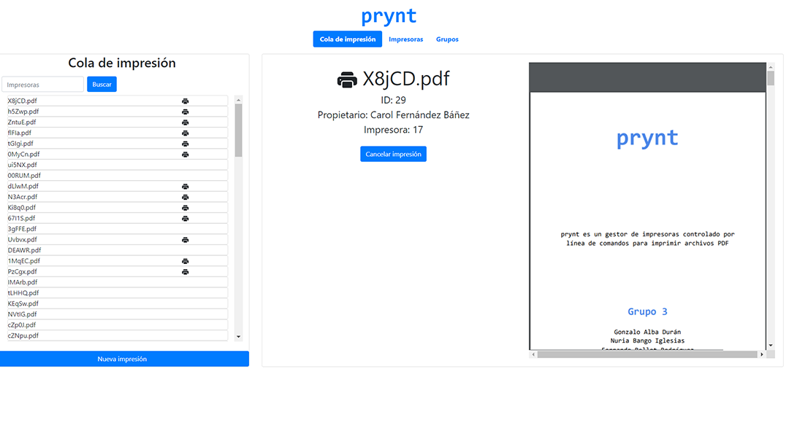

prynt
Cambios respecto a la anterior entrega
Respecto a la anterior entrega, hemos añadido la conexión con el servidor y validación. En las tres pestañas los elementos del panel izquierdo
muestran datos añadidos dinámicamente.
Cola de impresión
Ahora en el panel izquierdo salen las impresoras generadas por la api con el símbolo de impresora si se está imprimiendo.
Además podemos interaccionar con los elementos de la lista mostrandose la información en el panel derecho:
 
Entrega anterior Entrega actual
Impresoras
Ahora en la pestaña de impresoras se puede ver el filtrado de la columna izquierda por los atributos dados.
Además, podemos ver los grupos a los que pertenece dicha impresora y añadir o eliminarla de los grupos mostrados.
Hemos cambiado los botones de eliminar y editar para que tenga consistencia interna.


Entrega anterior Entrega actual
Grupos
En la pestaña de Grupos, de forma similar que en la de impresoras, tenemos dos grandes listas a la izquierda que
muestran las impresoras que se pueden añadir y ya están añadidas al grupo seleccionado.
Hemos cambiado los botones de eliminar y editar para que tenga consistencia interna.
Entrega anterior Entrega actual
Diálogos emergentes
Por último, los dialogos emergentes de creación o modificación de elementos son funcionales.
El dialogo para añadir una Nueva Impresión tiene validación implementada. El campo propietario se vuelve rojo cuando se intenta añadir una impresión sin propietario.
El desplegable que permite elegir Impresora o Grupo al que enviar la impresión tiene opciones coloreadas en rojo para grupos sin impresoras disponibles.


Ejemplo de diálogo emergente de editar impresora Ejemplo de diálogo emergente de eliminar grupo
Tareas pendientes
Usando PDF.JS tenemos pendiente mostrar los pdfs que se añadan como elementos a la cola de impresión.
El filtrado de grupos, a pesar de ser similar al filtrado ya hecho de impresoras, queda pendiente.
Los botones de edición de datos tanto en grupos como en impresoras aun dan algunos errores.
Extender la validación al resto de formularios, partiendo de la cola de impresión.